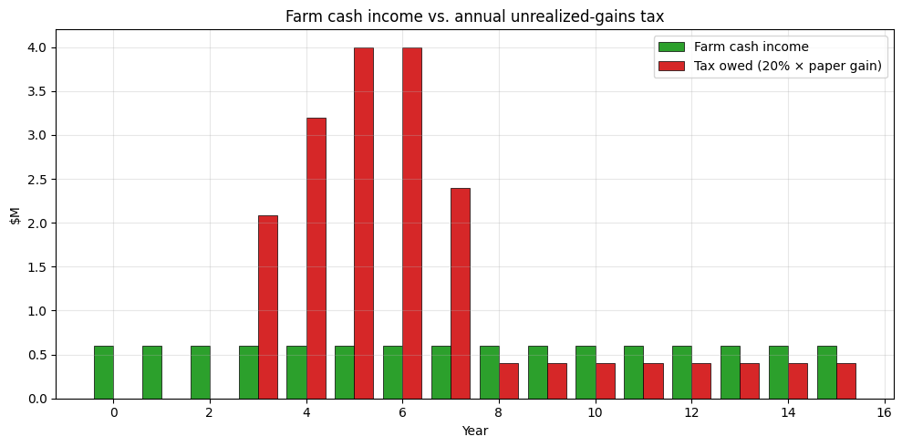
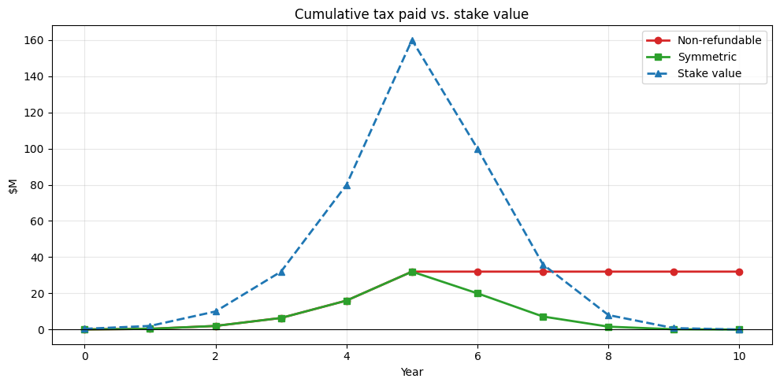

An annual mark-to-market tax sounds clean on a slide. Two worked simulations — a family farm next to a data-center boom, and a founder whose startup goes from unicorn to zero — show what it does to people who aren't liquid.
Every year, tax 20% of the change in value of an asset — stocks, real estate, a closely held business — even if the owner hasn't sold anything.
Capital gains are a huge share of the income of the wealthiest households, and under current law gains are only taxed when an asset is sold. Buy-and-hold investors can defer indefinitely, and the step-up in basis at death wipes a lifetime of gains off the ledger. Taxing gains as they accrue closes that gap on paper.
On paper. In practice, two cases tell the story.

A family runs a 4,000-acre row-crop operation. The corn pays what corn pays — about $600,000 of net cash income a year. In year 3 a hyperscaler announces a data-center campus 15 miles away. Speculators bid the surrounding farmland from $10,000 to $30,000 an acre over four years.
The farm's real activity hasn't changed. But on paper the farm is now worth over $120M, well past a $50M wealth threshold. At a 20% mark-to-market tax on the paper gain, here's what happens:
The bad outcome: there is no way to pay the tax from operations. To stay current the family must sell off acres — probably to the same developer-class buyer who caused the price spike. The policy accelerates the conversion of family farmland into commercial use. And if the data-center plan falls through and land prices drop, prior years' tax is not refunded.
Explore the farmer scenario with knobs →
A founder owns 40% of her venture-backed startup. She paid roughly nothing for her founder shares. The company raises priced rounds; by year 5 her stake is paper-worth $160M. By year 10 the company has wound down and the stake is worth zero. Throughout, the shares are illiquid — the cap table forbids secondary sales and her actual salary is $250k.
Each up-round produces an unrealized "gain" that the tax bill is computed against. Down-rounds produce paper losses, but they aren't refundable: at best they roll forward against future gains that never arrive.
The bad outcome: she pays tens of millions in real cash on paper money against a stake that ends up worthless. The only way to pay the worst-year bill is a forced partial sale of the company at the current paper mark — which depresses that mark and triggers the same problem for everyone else subject to the tax. The "symmetric" alternative — let the IRS refund losses — is mathematically clean (net tax ≈ $0) but politically untenable: it requires the Treasury to mail multi-million-dollar checks to wealthy households in bust years.
Explore the entrepreneur scenario with knobs →Both stories follow from the same four mechanical properties of any annual mark-to-market tax:
Both scenarios above are simulations with adjustable inputs. The full code lives in two Jupyter notebooks:
farmer.ipynb → entrepreneur.ipynb →None of this is an argument that the current system is fair. It's an argument that "tax unrealized gains annually, across all asset classes" is the version of the fix with the worst mechanical properties — and that the cleaner reforms get most of the revenue with a fraction of the breakage.